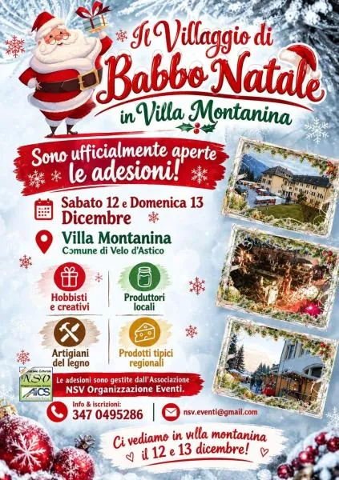

da sab 12 dic a dom 13 dic
Il Villaggio di Babbo Natale
La magia del Natale arriva a Velo d'Astico! Sabato 12 e Domenica 13 Dicembre 2026, lo splendido parco di Villa La Montanina – Comunità Santissima Annunziata si trasformerà in un luogo incantato, pronto ad accogliere grandi e piccini con “Il Villaggio di Babbo Natale”, un…
 Indicazioni
Indicazioni
- Costi e prenotazioni
- Costo non indicato · Prenotazione non indicata
- Programma
- Programma da verificare. Apri la fonte ufficiale per orari e possibili aggiornamenti.
- In caso di maltempo
- Nessuna indicazione specifica pubblicata.
- Note
- Acquisito automaticamente dalla fonte.
L’EVENTO
Descrizione completa
La magia del Natale arriva a Velo d'Astico! Sabato 12 e Domenica 13 Dicembre 2026, lo splendido parco di Villa La Montanina – Comunità Santissima Annunziata si trasformerà in un luogo incantato, pronto ad accogliere grandi e piccini con “Il Villaggio di Babbo Natale”, un appuntamento speciale dove tradizione, fantasia, divertimento e atmosfera natalizia si incontrano per regalare due giornate tutte da vivere.
L'iniziativa, proporrà un suggestivo percorso immerso nella natura, tra scenografie natalizie, villaggi tematici, Mercatini e tante sorprese dedicate soprattutto alle famiglie e ai bambini.
Il vero incanto prenderà vita lungo il suggestivo percorso del parco, che per l'occasione sarà interamente addobbato a tema natalizio. Tra alberi, decorazioni e scenografie, i visitatori potranno passeggiare tra le bancarelle del Mercatino Natalizio, con Artigianato Artistico, creazioni originali, curiosità, idee regalo, Prodotti Tipici e specialità gastronomiche dolci e salate. Non mancheranno espositori dedicati alla Salute Naturale e al Benessere.
Nel cuore del bosco saranno allestiti diversi Villaggi Tematici: il magico Villaggio degli Elfi, il suggestivo Villaggio della Neve e tante ambientazioni capaci di far sognare i bambini e tornare bambini anche gli adulti.
Lungo il percorso sarà possibile ammirare anche un suggestivo Presepio Artistico, fino a raggiungere il luogo più atteso: il Villaggio di Babbo Natale, dove respirare tutta la magia e l'atmosfera delle feste.
Ma le sorprese non finiscono qui! Sarà possibile visitare anche la curiosa e divertente Casa del Grinch, mentre all'inizio del percorso nel bosco sarà presente una postazione dedicata al Truccabimbi, per trasformare i più piccoli nei loro personaggi preferiti.
Durante la visita non mancheranno diversi Punti Ristoro, dove concedersi una piacevole pausa e gustare qualcosa di buono e caldo in compagnia.
Due giornate da vivere e condividere, tra Mercatini, fantasia, sapori, magia e divertimento!
Per info Manifestazione e partecipazione come Espositore: Raffaella 347.0495286
Email: nsv.eventi@gmail.com
https://www.facebook.com/NsvOrganizzazioneEventi
IL PROGRAMMA
Programma e orari
Appuntamenti raccolti dalle fonti elencate. Dove manca un orario, non è ancora disponibile in questa scheda.
Programma pubblicato
- Dal 2026-12-12 al 2026-12-13
INFORMAZIONI UTILI
Prima di partire
- Controllare la fonte prima di partire.
ORGANIZZAZIONE